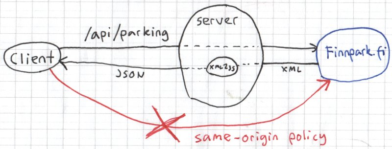

Yksi ehdotus harjoitustyöksi on sovellus, joka näyttää kartalla Tampereen parkkipaikat tilatietoineen
Kartan voi näyttää angular-google-maps-moduulin avulla
Parkkipaikkatiedot saa Finnparkin rajapinnasta
Lisäominaisuutena käyttäjät voivat arvostella parkkipaikkoja (jotta tulee tietokannallekin jotain käyttöä)
Aivan aluksi täytyy luoda uusi Cloud9-workspace käyttäen harjoitustyöpohjaa näiden ohjeiden mukaan
Kun harjoitustyöpohja on avattu, voidaan aloittaa vaikka siitä, että luodaan uusi näkymä karttaa varten
Yeomanin angular-fullstack-generaattorin avulla voimme luoda näkymän automaattisesti
Yeoman ja generaattori täytyy olla asennettuna
npm install -g yo generator-angular-fullstackSitten, kuten dokumentaatiossa todetaan, voi uuden map-nimisen näkymän voi luoda komennolla
yo angular-fullstack:route mapKysymyksiin voi vastata oletusarvoilla, jolloin luodaan tiedostoja
hakemistoon client/app/map/
client/app/map| Tiedosto | |
|---|---|
map.controller.js |
Angularin controller |
map.controller.spec.js |
Testit controllerille |
map.css |
Tyylitiedosto |
map.html |
Näkymä |
main.js |
Konfiguraatio |
Ennen karttanäkymän muokkaamista luodaan siihen osoittava linkki navigointipalkkiin
Tiedostossa client/components/navbar/navbar.controller.js on
navigointipalkin controller
$scope.menu-muuttujaan$scope.menu = [{
'title': 'Home',
'link': '/'
},
{
'title': 'Map',
'link': '/map'
}];$scope:n menu-muuttujaa käytetään tiedostossa navbar.html,
joten nyt navigointipalkkiin pitäisi ilmestyä uusi linkking-include-attribuuttiaclient/app/map/map.html:<div ng-include="'components/navbar/navbar.html'"></div>
<div class="container">
<div class="row">
<div class="col-md-8">Kahdeksan</div>
<div class="col-md-4">Neljä</div>
</div>
</div>container-luokkaclass="row")class="col-md-5" ym.)bower install angular-google-maps --saveclient/app.jsclient/app/map/map.controller.jsclient/app/map/map.htmlclient/app/map/map.css-->
map.controller.js kun
ohjeen
kohta 3 tehdään
ensinmainitulla tavalla:/* globals angular */
'use strict';
angular.module('workspaceApp')
.controller('MapCtrl', function ($scope, $log, uiGmapGoogleMapApi) {
// Kohdistetaan kartta Hervantaan
$scope.map = { center: {
latitude: 61.450524290834196,
longitude: 23.85979997253412 },
zoom: 12 };
uiGmapGoogleMapApi.then(function(maps) {
$log.log("Kartta on valmis käyttöön", maps);
});
});angular-google-maps:n
dokumentaatiosta saa tarvittaessa lisätietoamap.controller.js:$scope.markers = [{
id: 0,
coords: {
latitude: 61.450524290834196,
longitude: 23.85979997253412
}
}];map.html<ui-gmap-google-map center="map.center" zoom="map.zoom">
<ui-gmap-markers
models = "markers"
coords = "'coords'"
options = "'options'">
</ui-gmap-markers>
</ui-gmap-google-map>Siirrytään välillä palvelimelle
Toteutetaan palvelimelle reitti /api/parking, joka palauttaa
parkkipaikkojen tiedot
Palvelin puolestaan hakee tiedot Finnparkin rajapinnasta

parkingspaceyo angular-fullstack:endpoint parkingspaceserver/api/parkingspace| Tiedosto | |
|---|---|
| index.js | Reittien määrittely |
| parkingspace.controller.js | Reittien toteutus |
| parkingspace.spec.js | Testit |
server/routes.jsapp.use('/api/parkingspaces', require('./api/parkingspace'));request-moduulillanpm install request --savevar request = require('request');
request.get(FINNPARK_URL, function(error, response, body) {
// ...
});Finnparkin rajapinta tarjoaa datan XML-muodossa
Data pitää muuntaa JSON-muotoon, mikä onnistuu xml2js-moduulilla
npm install xml2js --savevar xml2js = require('xml2js');
xml2js.parseString(data, function(err, result) {
// ...
});Valmis toteutus: parkingspace.controller.js
Se muuntaa XML:n taulukoksi, jonka alkiot ovat tämän näköisiä
{
"id": "FNPK.13",
"name": "P-Duo",
"coords": {
"latitude": 61.4509,
"longitude": 23.8517
},
"status": {
"spacesAvailable": true,
"open": true
}
}http://***.c9users.io/api/parkingspaces
jotain järkevääJos palvelinpään rajapinta /api/parkingspaces toimii,
voidaan siirtyä jälleen selainpäähän
Haetaan parkkipaikat tiedostossa map.controller.js
Käytetään Angularin $resource-oliota
function($scope, $log, $resource, uiGmapGoogleMapApi) {var ParkingSpace = $resource('/api/parkingspaces');
$scope.markers = ParkingSpace.query();Jos haluamme esimerkiksi asettaa klikkaustenkuuntelijoita markkereille,
emme voi suoraan antaa palvelimelta tullutta /api/parkingspaces-resurssia
kartalle, kuten edellä
Vaan täytyy muuttaa saamaamme vastausoliota
$resource:lle oma metodi ja
tälle transformResponse-attribuuttivar ParkingSpace = $resource('/api/parkingspaces/', null,
{
query: {
isArray: true,
transformResponse: function(data) {
var markers = angular.fromJson(data);
angular.forEach(markers, transformMarker);
return markers;
}
}
});transformMarker-funktio -->function transformMarker(m) {
m.options = {
labelContent: '<div class="markerlabel">' + m.name + '</div>'
};
m.events = {
click: function() {
$scope.selectedParkingspace = m;
}
};
}Nyt viimeisimmäksi klikattu markkeri on $scope:ssa muuttujassa
selectedParkingspace
Voimme vaikka näyttää sen näkymässä -->
Jaetaan map.html:ssä oleva row kahteen sarakkeeseen
Kartan leveydeksi 9 yksikköä ja reviewcol-elementti 3 yksikköä
<div class="container">
<div class="row">
<div class="col-md-9">
<ui-gmap-google-map center='map.center' zoom='map.zoom'>
<!-- ... -->
</div>
<div class="col-md-3 reviewcol">
<h3>{{selectedParkingspace.name}}</h3>
</div>
</div>
</div>h3-otsikon sisällöksi controllerissa asetetun
selectedParkingspace-muuttujan name-attribuuttiAttribuutilla options.icon voi asettaa URL:n josta markkerin iconi
ladataan
Asetetaan markkerit erilaisiksi parkkipaikan tilan perusteella
Jos et halua luoda ikoneita itse, voit käyttää vaikka Googlen tarjoamaa urlia, joka palauttaa kuvan attribuuttien perusteella
Funktiossa transformMarker esim.
var color;
if ('spacesAvailable' in m.status) {
color = '00FF00';
}
else if ('open' in m.status) {
color = '0000FF';
}
else {
color = 'FF0000';
}
m.options.icon = 'http://chart.apis.google.com/chart?chst=d_map_pin_letter&chld=P|' + color;Käyttäjillä täytyy luonnollisesti olla mahdollisuus arvostella parkkipaikkoja
Versiossa 1.0 arvostelu on pelkkä teksti
Luodaan arvostelua varten Review-tietokantamalli tiedostoon
server/models/review.js
-->
"use strict";
module.exports = function(sequelize, DataTypes) {
var Review = sequelize.define("Review", {
parkingspaceId: DataTypes.STRING,
text: DataTypes.STRING
},
{
classMethods: {
associate: function(models) {
Review.belongsTo(models.User, {as: 'reviewer'});
}
},
indexes: [{
fields: ['parkingspaceId']
}]
});
return Review;
};Sitten täytyy luoda rajapinta, jonka kautta arvosteluja voi lukea ja kirjoittaa
Voisimme luoda Yeomanilla uuden endpointin tai laajentaa
olemassaolevaa /api/parkingspaces-reittiä
Luodaan käsittelijä osoitteelle
/api/parkingspaces/:parkingspaceId/reviews
:parkingspaceId tarkoittaa että sen tilalle tulee sen parkkipaikan
id, jonka arvosteluja luetaan/kirjoitetaan
server/api/parkingspace/index.jsrouter.get('/:parkingspaceId/reviews', controller.reviewsIndex);
router.post('/:parkingspaceId/reviews', controller.reviewsCreate);server/api/parkingspace/parkingspace.controller.jsexports.reviewsIndex = function(req, res) {
// TODO: haku tietokannasta
send.json([]);
};
exports.reviewsCreate = function(req, res) {
// TODO: lisäys tietokantaan
send.json({});
};exports.reviewsIndex = function(req, res) {
models.Review.findAll({
where: {
parkingspaceId: req.params.parkingspaceId
},
include: [{model: models.User, as: 'reviewer'}]
}).then(function (reviews) {
res.json(reviews);
},
function(err) {
console.log(err);
res.status(500).send();
});
};exports.reviewsCreate = function(req, res) {
var user = req.user;
var text = req.body.text;
var pid = req.params.parkingspaceId;
if (!text) {
return res.send(400);
}
var review = models.Review.build({
parkingspaceId: pid,
text: text
});
review.setReviewer(user);
review.save().then(function(review) {
res.json(review);
});
};Jatkuu osassa 2